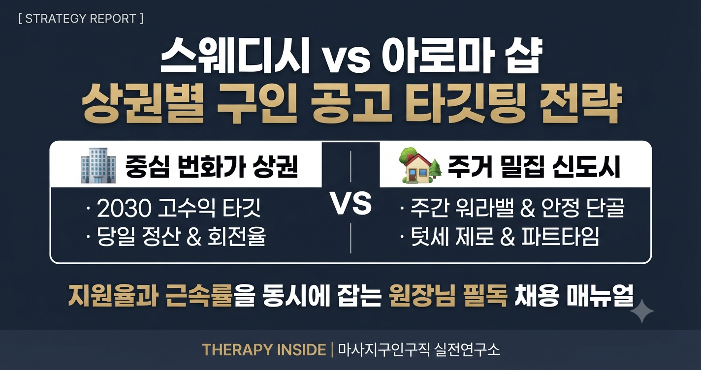

마사지 및 테라피 샵을 운영하는 원장님들이 마주하는 가장 까다로운 난제 중 하나는 ‘우리 매장에 딱 맞는 인재를 안정적으로 수급하는 일’입니다. 수많은 매장이 높은 채용 플랫폼 비용을 지불하고 유사한 급여 조건을 내걸지만, 어떤 매장은 공고를 올리자마자 지원자가 몰리는 반면 어떤 매장은 몇 주째 조회수만 오를 뿐 면접 문의조차 들어오지 않습니다.
이러한 성패를 가르는 본질적인 요인은 단순히 페이의 높낮이가 아닙니다. 바로 ‘매장의 주력 관리 프로그램(스웨디시 vs 아로마)’과 ‘매장이 위치한 상권의 특성(오피스·번화가 vs 주거·항아리 상권)’의 상관관계를 면밀히 분석하고, 지원자의 라이프스타일에 맞추어 구인 공고를 정교하게 타깃팅했는가의 차이입니다.

강남, 판교, 여의도 등 오피스 밀집 지역과 유흥·번화가가 결합된 상권은 소비력이 왕성하고 회전율이 빠른 20~40대 직장인 남성 고객이 주를 이룹니다. 이들 상권에서는 부드러운 감성 테라피와 림프 순환을 결합한 프리미엄 스웨디시 매장이 압도적인 매출을 견인합니다.
역세권 도보 3분, 일 평균 4~6콜 보장, 당일 전액 즉시 정산, 초보 밀착 1:1 당일 속성 교육대단지 아파트 단지, 학원가 주변의 배후 상권은 가족 단위, 여성 고객, 주기적으로 힐링을 찾는 단골 직장인이 주 고객층입니다. 스웨디시보다는 정통 아로마 테라피, 건식 힐링 케어, 림프 마사지의 비중이 높습니다.
텃세 제로 순번제, 야간 근무 없음 / 주간 고정, 주부 및 파트타임 환영, 100% 예약 단골 중심 초건전 샵| 구분 | 🏢 번화가·중심 오피스 상권 (스웨디시 중심) | 🏡 주거 밀집·신도시 상권 (아로마·릴랙싱 중심) |
|---|---|---|
| 주요 고객군 | 2040 직장인, IT 밸리 종사자, 빠른 회전 고객 | 아파트 주민, 여성 고객, 주기적 단골층 |
| 타깃 관리사 | 20대~30대 초반, 단기 고수익 집중형 | 30대~50대, 워라밸 및 안정적인 주간 고정형 |
| 핵심 유인책 | 높은 배분율(5:5~6:4), 풍부한 콜수, 당일 즉시 정산 | 감정 소모 제로, 정시 퇴근, 평화로운 환경 |
| 공고 필수 기재 | 데스크의 철저한 고객 신원 인증, 최신 휴게 시설 | 텃세 없는 공정 순번제, 빨래·청소 잡무 분리 |
단순히 "역세권 위치"라고 적기보다, "역삼역 4번 출구 도보 3분 거리이며, 인근 IT 직장인 단골 예약이 대부분이라 매너가 깔끔하여 팁과 지명이 자연스럽게 형성됩니다."와 같이 지원자의 근무 체감도로 번역해 주어야 합니다.
합법적인 건전 샵임에도 불구하고 표현이 모호하면 우수한 인재들이 지원을 망설입니다. "100% 초건전 에스테틱·테라피 샵", "고객 사전 예약 및 전화 인증제", "데스크 실장 상주 & 블랙리스트 DB 가동"을 굵은 글씨로 명확히 박아두세요.
"관리사님은 오직 고객 케어와 본인의 컨디션 관리에만 집중하세요. 룸 청소와 빨래, 시트 정리는 전담 직원이 도맡아 진행합니다."라는 한 줄이 공고에 들어가는 순간, 타 샵 대비 압도적인 지원율 우위를 점할 수 있습니다.